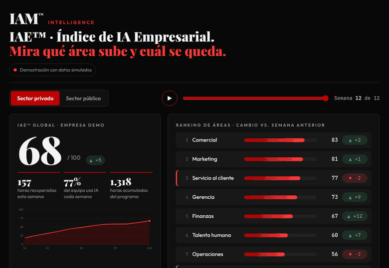

|
IAM™ Intelligence
IA empresarial que se mide en horas recuperadas · iamlatam.co
|
Tu empresa ya tiene IA.
Le falta un sistema.
Hola {{nombre}}, soy Luz Amaya, de Barranquilla. Represento a IAM™, la firma de la economista Sandra Curvelo que ayuda a empresas y entidades públicas a instalar la IA en su día a día y a medir cuántas horas recupera cada área.
Te escribo porque tenemos una forma muy concreta de mostrarlo:
|
|
TABLERO IAE™ · ÍNDICE DE IA EMPRESARIAL
Mira qué área sube y cuál se queda, semana a semana.

Primero una empresa privada, luego una entidad pública: 12 semanas de IA instalada, área por área.
Demostración con datos simulados. Tu tablero real se arma con los datos de tu organización. ¿Quieres explorarlo tú mismo? Abre el tablero interactivo.
|
|
|
¿Cuánto marcaría tu organización hoy? Agenda una sesión de inteligencia artificial empresarial sin costo con Sandra y lo revisan juntos.
El botón abre el calendario de Sandra en calendly.com · Sin costo · Virtual
|
|
60% a 70%
del tiempo de los colaboradores se va en actividades que la IA actual ya tiene el potencial de automatizar.
Fuente: estudio de McKinsey & Company.
|
Hoy la mayoría de equipos abre ChatGPT o Claude, hace una pregunta suelta y vuelve al Excel de siempre. IAM™ Intelligence instala la IA como sistema de trabajo, área por área.
|
Cómo lo hacemos: Método DIAL-3R™
|
Diagnosticar. Encontramos qué áreas pierden más horas y dónde la IA da retorno primero. |
|
Instruir. Cada rol aprende con plantillas propias: gerencia, finanzas, talento, operaciones y ventas. |
|
Aplicar. La IA entra a los procesos reales: prospección, seguimiento, cierre y reportes. |
|
Liberar. Tu gente recupera horas para lo que mueve la caja: vender y atender. |
|
| LO QUE MEDIMOS, NO LO QUE PROMETEMOS |
-40% tiempo en prospección manual |
+80% del equipo usando IA en 60 días |
IAE™ horas recuperadas por área, cada semana |
| Metas del programa IAM™ Intelligence. |
|
Quiénes somos
IAM™ fue fundada por Sandra Curvelo, con más de 7 años diseñando metodologías comerciales y vendiendo soluciones de tecnología como SAP.
+1.500 profesionales · +40 empresas · 8 países
Han confiado en IAM™: Drummond, Grupo Bimbo, Bavaria y Grupo Abstract.
|
|
"O usas la IA en tu día o vas a desaparecer."
Sandra Curvelo, Founder & CSO de IAM™
Te lleva directo al calendario de Sandra en calendly.com.
|
Un saludo,
Luz Amaya
Business Developer IAM™
Zona Atlántico · Región Norte
WhatsApp: [WhatsApp de Luz]
|
|
|
IAM™
iamlatam.co ·
LinkedIn ·
Instagram
Recibes este correo porque tu contacto fue compartido con IAM™ con fines comerciales. Darme de baja.
|